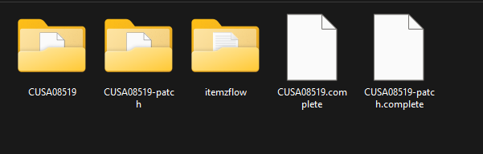
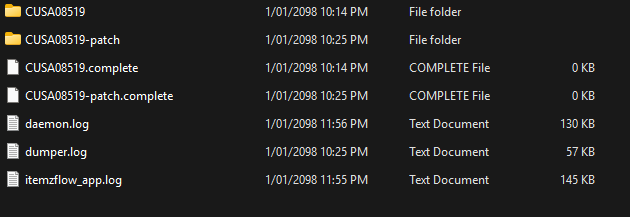

PS4 · ITEMZFLOW INTAKE
Itemzflow dump guide
Itemzflow normally places the base-game and update folders at the root of its selected dump drive. Put them together in one itemzflow folder, then drop that folder into Digital Forge for automatic detection and processing.
Base game + updateOne game per importAutomatic intake
1. Find the Itemzflow dump
With Itemzflow's default USB dump path, the game and patch folders are created directly at the root of the drive. If the dump path was changed in Itemzflow settings, look in that selected location instead. Use Dump All when you want both the base game and its installed update.

-patch folder sit beside each other. Itemzflow may also create an itemzflow folder for logs. The small .complete files are optional markers.2. Check the optional logs
When present, the itemzflow folder may contain log files such as daemon.log, dumper.log and itemzflow_app.log. Their presence varies. Digital Forge does not require these logs to identify or process the game.

3. Prepare one folder for Digital Forge
Digital Forge's automatic Itemzflow intake expects the base game and its matching update to be immediate contents of the same parent folder. If Itemzflow has already made an itemzflow folder, move the base and patch folders into it alongside any logs. If that folder is not there, create one and move the game folders into it.
itemzflow/
├── CUSAxxxxx/ # base game
├── CUSAxxxxx-patch/ # matching update
├── CUSAxxxxx.complete # optional, zero-byte marker
├── CUSAxxxxx-patch.complete # optional, zero-byte marker
├── daemon.log # optional
├── dumper.log # optional
└── itemzflow_app.log # optionalThe .complete markers shown above are empty files, not folders. They are not needed by Digital Forge, so you may leave them in place or delete them. Keep the two game folders directly inside itemzflow; do not put them inside a separate logs subfolder.
4. Drop the folder into Digital Forge
- Launch Digital Forge and drag the prepared
itemzflowfolder into the application. - Digital Forge reads the game metadata, identifies the title and console, and matches the base game with its update.
- Review the detected game and versions, then continue with the proposed Itemzflow workflow.
- Choose the workspace drive and final output location when prompted. These storage choices remain manual.
- Digital Forge handles the remaining preparation, packaging, merge and verification steps, and reports any step that needs attention.
This folder arrangement is required for Digital Forge's automatic Itemzflow intake. Without the base and matching update together under one parent folder, you would need to select and organize the inputs manually.
What Digital Forge does with the dump
Digital Forge reads the dump folders and their metadata, validates that the base and update belong together, and stages working copies for its PS4 FPKG workflow. It does not dump content from the console, install the result on a PS4, or modify the original source folders. Use game data you own or are authorized to use.
Large game storage
For games larger than 50 GB, Digital Forge recommends using your PC's internal storage for workspace and packaging. Some large builds may fail when processed directly on an external drive. Choose the workspace and output drive that suit your available space.
Troubleshooting
- No dump detected: confirm the
CUSAxxxxxgame folder is directly inside the droppeditemzflowfolder and contains readable game data. - Update not matched: confirm the update folder is named with the same title ID followed by
-patch. - No logs or completion markers: this is fine; both are optional. Digital Forge validates the actual game and update folders.
- Not enough workspace space: select another workspace drive or free space, and keep the original dump intact.
- Package step fails: follow the named diagnostic step and confirm the required packaging tools are available.
Official resources
Itemzflow on GitHub · Digital Forge source · Digital Forge reports